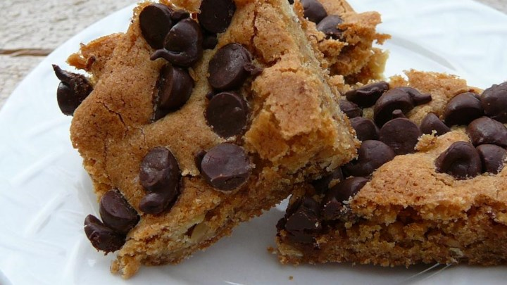
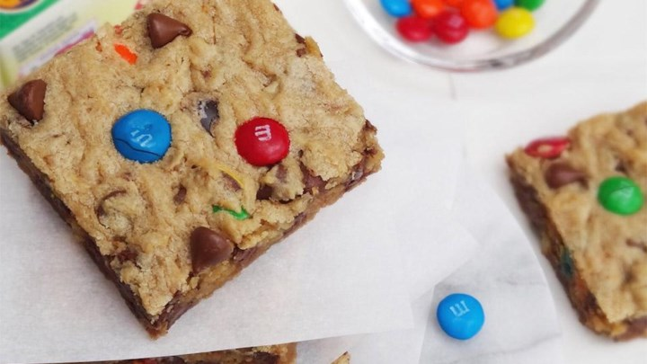

Pour melted margarine into a 9x13-inch pan. Sprinkle the graham cracker crumbs evenly over the margarine. Place the chopped nuts over the crumbs, and scatter the chocolate and butterscotch chips over the nuts. Add the coconut over all, and pour the milk evenly over the top.
Bake 25 to 30 minutes or until lightly brown on top. Cool at least 20 minutes, then cut into desired sized bars.
Recipe #2: Blonde Brownies

Cook Time
50 minutes
Ingredients
1 cup of sifted all-purpose
1/2 teaspoon of baking powder
1/8 teaspoon of baking soda
1/2 teaspoon of salt
1/2 cup of chopped walnuts
1/3 cup of butter
1 cup of packed brown sugar
1 egg
1 tablespoon of vanilla extract
2/3 cup of semisweet chocolate chips
Directions
Preheat oven to 350 degrees F (180 degrees C). Grease a 9x9-inch baking pan.
Stir the brown sugar into the melted butter and mix well. Cool slightly.
Mix the beaten egg and vanilla into the brown sugar mixture. Add flour mixture, a little at a time, mixing just until combined.
Spread the batter into the prepared pan. Sprinkle 1/2 to 1 cup chocolate chips on top. Bake in the preheated oven until a toothpick inserted in the center comes out clean, about 20 to 25 minutes.
Recipe #3: Monster Cookie Bars

Cook Time
40 minutes
Ingredients
1/2 cup of butter
3/4 cup of packed brown sugar
1 egg
1/2 teaspoon of vanilla extract
1 1/4 cups of all-purpose flour
1/2 teaspoon of baking powder
1/2 teaspoon of sea salt
1/4 cup of creamy peanut butter
1/3 cup of rolled oats
1 cup of milk chocolate chips
1/2 cup of candy-coated milk chocolate pieces
Directions
Preheat oven to 350 degrees F (175 degrees C). Grease a 8x8-inch baking pan.
Cream together butter and brown sugar. Mix in egg and vanilla.
In a separate bowl, whisk flour, baking powder, and sea salt together. Gradually incorporate dry ingredients into the butter/sugar mixture. Mix thoroughly.
Stir in creamy peanut butter, oats, chocolate chips, and candy-coated chocolates. Spread mixture evenly in prepared baking pan.
Bake until set, 25 to 27 minutes. Allow to fully cool before cutting into bars.